11 plates. Deterministic overlays rendered by the composition-analysis skill.
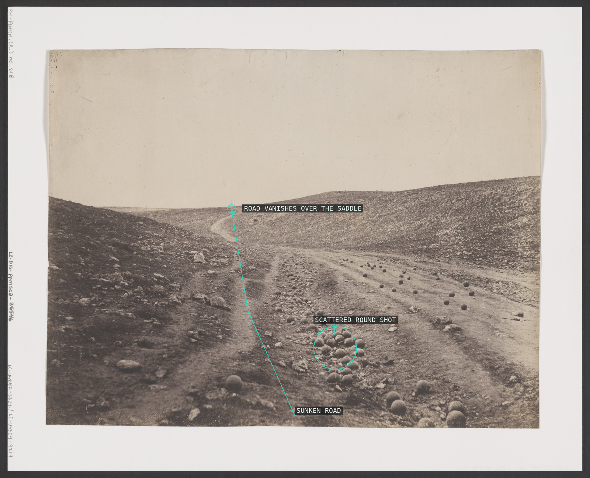
01-valley-of-shadow The sunken road's converging ruts collapse the whole valley to one distant vanishing point, and the litter of round shot is the only incident breaking the emptiness of that perspectival corridor.
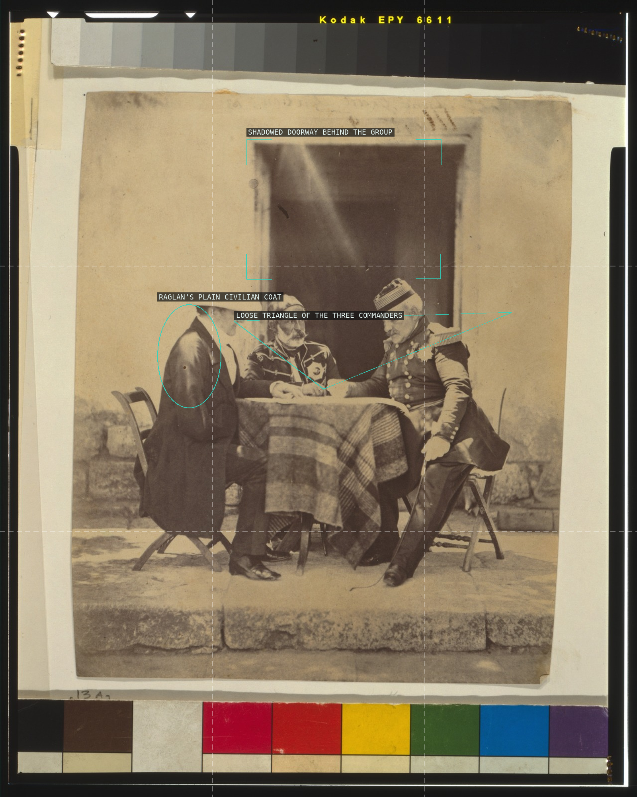
02-council-of-war The three Allied commanders lean into a loose triangle over the map table, its apex at their joined hands, while Raglan's plain civilian coat (left) marks his rank apart from the uniformed Pelissier and Omar Pasha, all set beneath the shadowed doorway.
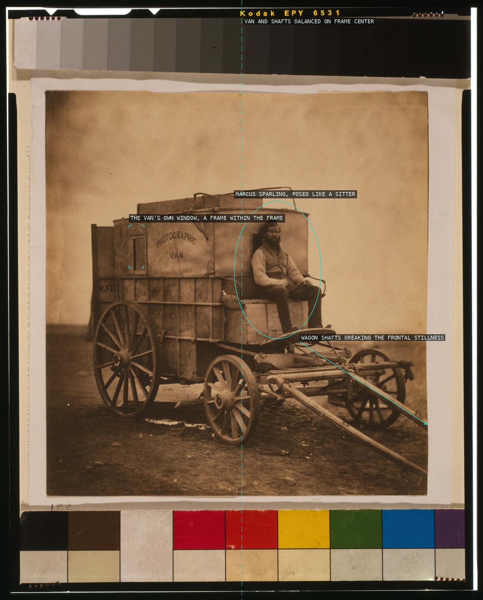
03-artists-van Fenton poses his own photographic van frontally and centered like a portrait sitter, its own window doubling as a frame-within-a-frame, while only the trailing wagon shafts break the symmetry.
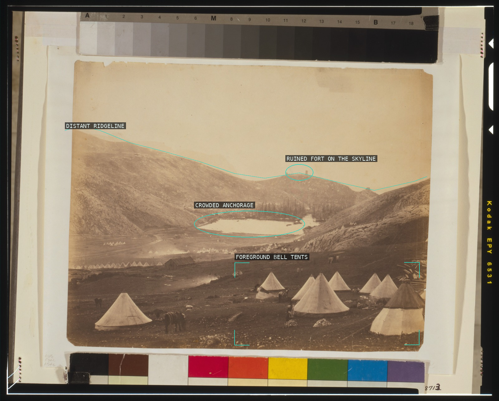
04-balaklava-guards-hill A high vantage on Guard's Hill telescopes the view into stacked horizontal bands -- foreground tent camp, the crowded Balaklava anchorage, and the ruined fort on the ridge beyond -- terrain documented rather than incident staged.
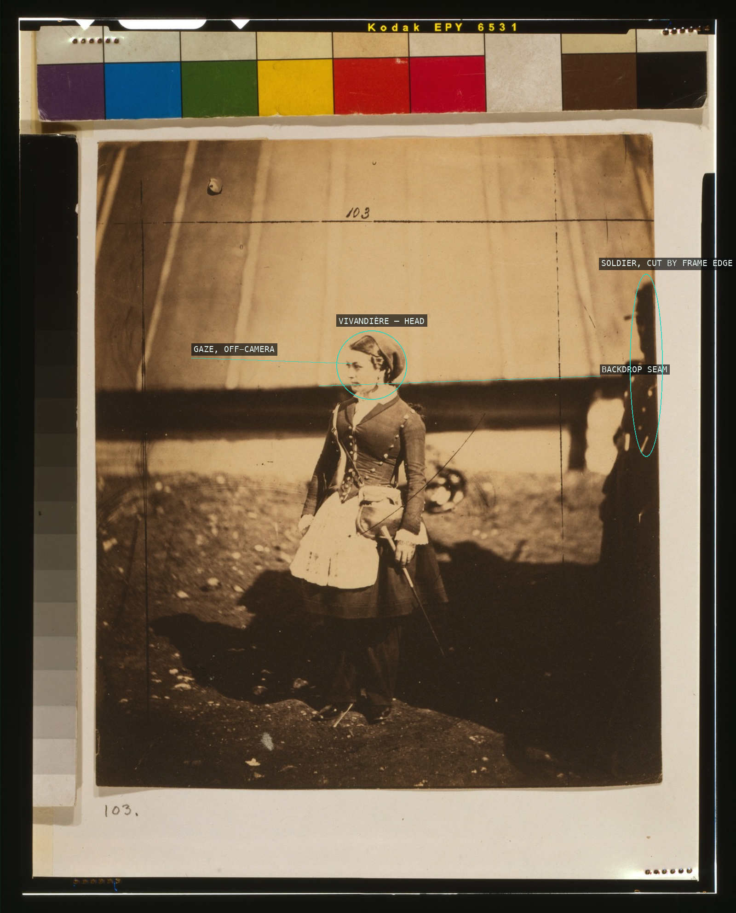
05-vivandiere A studio-formal full-length portrait of the vivandière, gaze turned off-camera, with a soldier sliced by the frame's right edge planted as scale and counterweight.
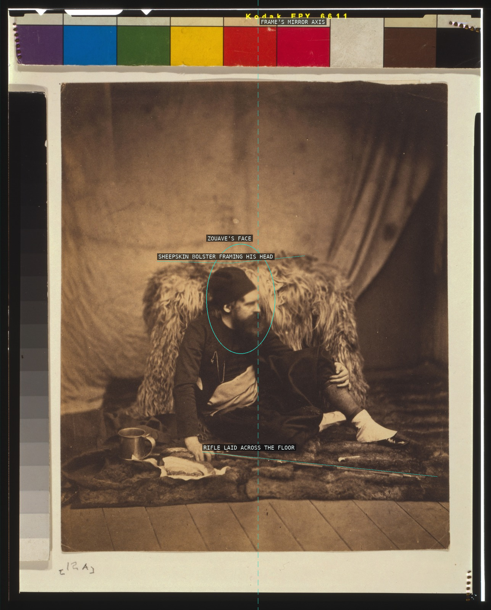
06-a-zouave Posed against a plain studio ground, the wounded Zouave's head rests almost exactly on the frame's mirror axis while his sprawled body, propped fleece, and grounded rifle do the rest of the compositional work.
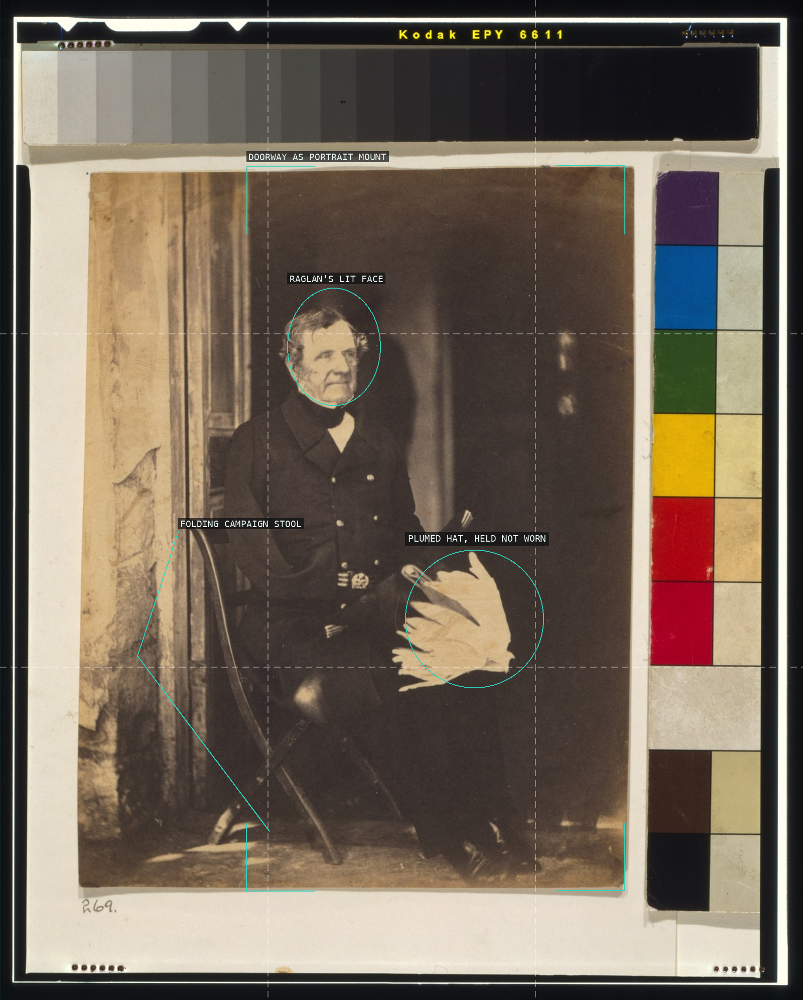
07-lord-raglan The commander sits off-center on his own folding camp stool at a real threshold, not a studio backdrop -- the dark doorway itself acts as the portrait's frame, isolating his lit face and the plumed hat he holds rather than wears.
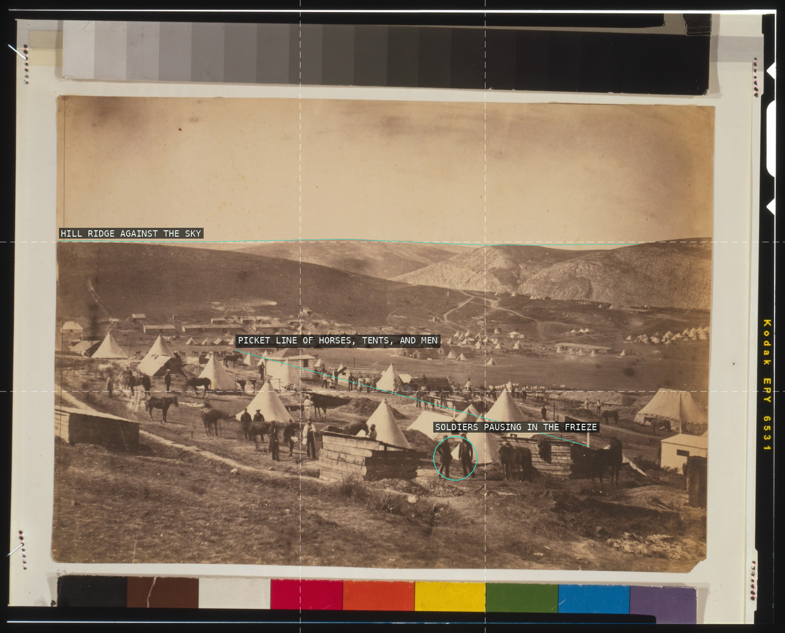
08-camp-5th-dragoon-guards Shot from high on the slope, the frame stacks into flat bands -- sky, a nearly level ridge, and a foreground frieze of tents, horses, and men -- reading the camp as horizontal terrain rather than a scene organized by depth.
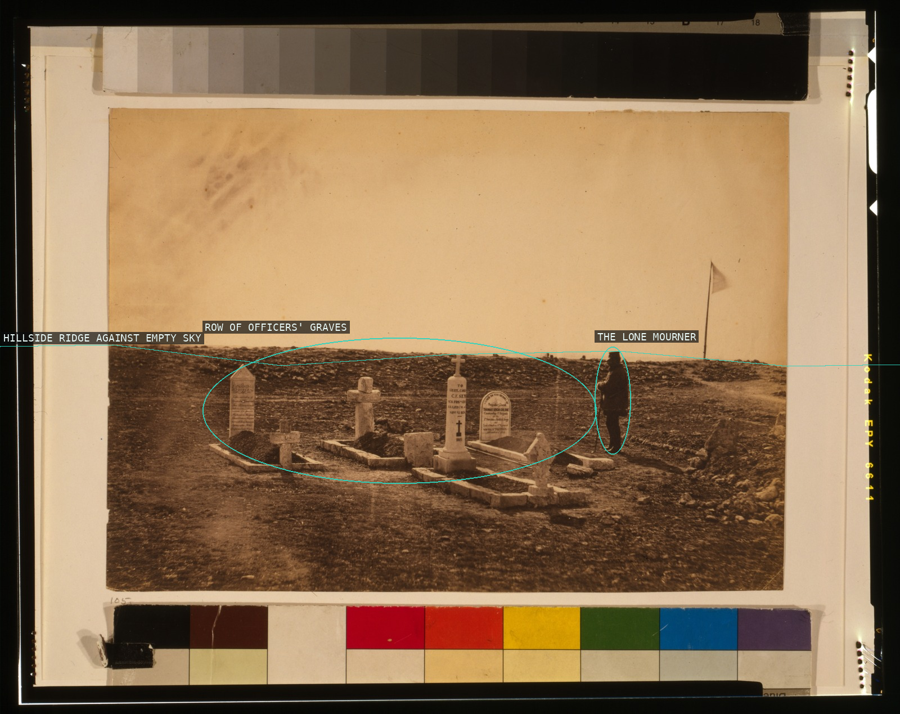
09-cathcarts-hill-tombs A near-flat hill crest divides the frame into vast empty sky and stony ground; the ordered rank of grave markers and the single mourning figure beside them are the only interruptions, the man's small scale measuring the cemetery's scale.
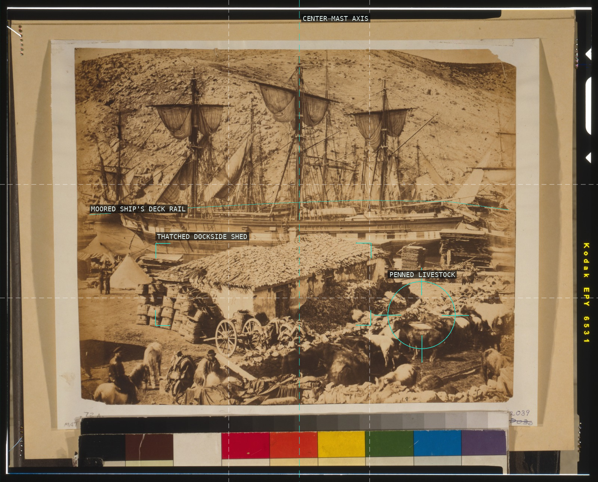
10-balaklava-cattle-pier Hillside, moored ship, dockside shed, and penned cattle stack into frontal, deadpan registers -- overlapping planes rather than a single receding perspective.
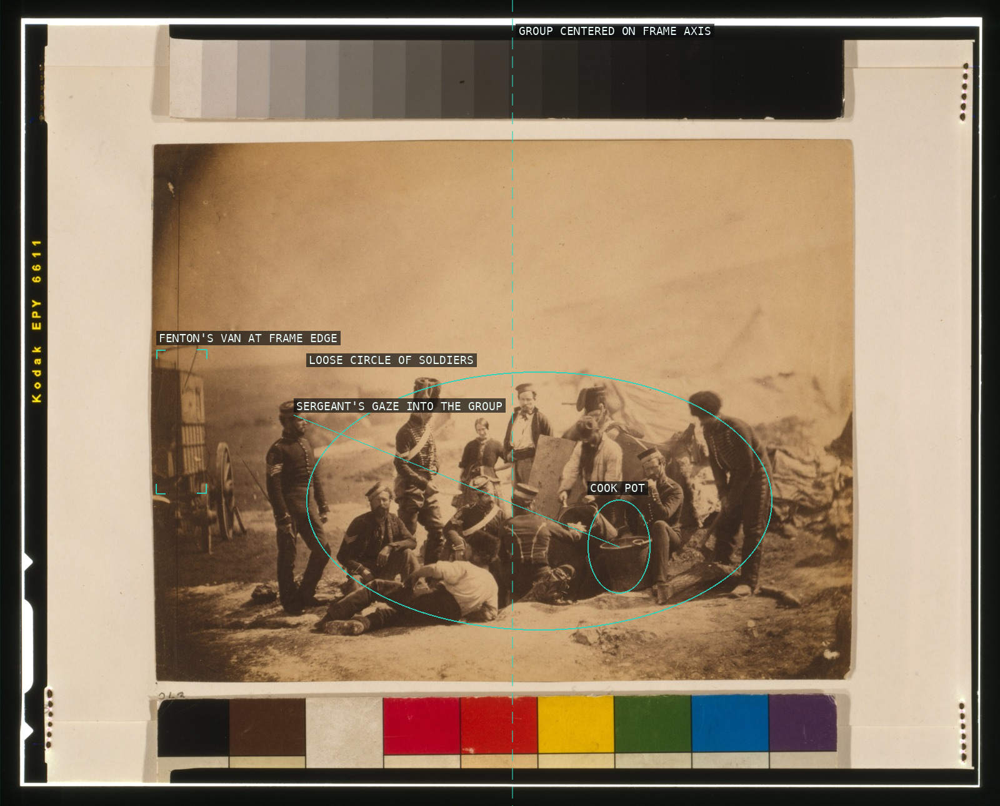
11-cookhouse-8th-hussars A studio-casual muster around the cookpots resolves into a centered, balanced cluster, with Fenton's own van anchoring the frame's edge.